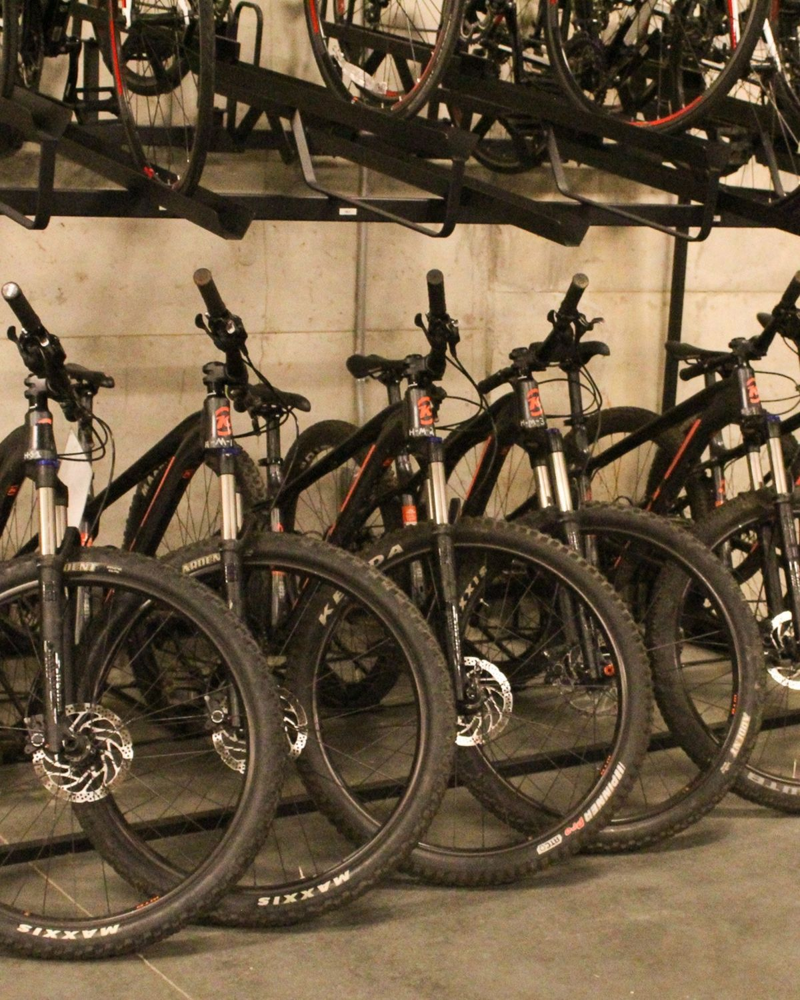

In this project I transformed and cleaned data using aggregating, CTEs, UPDATE, CREATE and window function to improve reporting process.
Then I conducted exploratory data to identify layoff trends overtime, top affected companies and detect peak layoff periods.

I created an interactive Tableau dashboard to analyze Airbnb listings based on price, location, and room types. Through this project, I explored seasonal trends and bedroom-related data to identify optimal booking periods and pricing patterns. Additionally, I delivered technical insights on average prices, revenue growth, and high-demand areas to improve decision-making.

I transformed and processed the dataset using Power Query and DAX to ensure data completeness and validity. Through the analysis, I provided technical insights on job roles, preferred programming languages, common entry challenges, and overall job satisfaction within the field. Additionally, I delivered a comprehensive analytical report that highlighted major trends and key factors influencing career growth, helping to present a clearer picture of the industry landscape.
In this project I conducted an exploratory data analysis in Python to examine population trends across countries and regions. Through this analysis, I identified key patterns in population growth, migration changes, and regional differences to support data-driven forecasting.

In this project I analyzed bike sales data in Excel to examine customer purchasing patterns based on age, gender, salary, and commuting distance. Through this analysis, I identified key trends in buyer behavior and the factors that most strongly influenced bike purchase decisions.